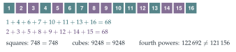

Let \(\mathrm{p}_0(x) = (1 - x)(1 - x^2)(1 - x^4)\). Show that \((1 - x)^3\) is a factor of \(\mathrm{p}_0(x)\). If \(\mathrm{p}_1(x) = x\mathrm{p}_0'(x)\) show, by considering factors of the polynomials involved, that \(\mathrm{p}_0'(1) = 0\) and \(\mathrm{p}_1'(1) = 0\).
By writing \(\mathrm{p}_0(x)\) in the form \[\mathrm{p}_0(x) = c_0 + c_1x + c_2x^2 + c_3x^3 + c_4x^4 + c_5x^5 + c_6x^6 + c_7x^7,\] deduce that \[\begin{aligned} 1 + 2 + 4 + 7 &= 3 + 5 + 6 \\ 1^2 + 2^2 + 4^2 + 7^2 &= 3^2 + 5^2 + 6^2. \end{aligned}\] Show that we can write the integers \(1, 2, \ldots, 15\) in some order as \(a_1, a_2, \ldots, a_{15}\) in such a way that \[a_1^r + a_2^r + \cdots + a_8^r = a_9^r + a_{10}^r + \cdots + a_{15}^r\] for \(r = 1, 2, 3\).
The hook
Split the numbers \(1\) to \(16\) into two teams of eight: \[\{1, 4, 6, 7, 10, 11, 13, 16\} \quad\text{and}\quad \{2, 3, 5, 8, 9, 12, 14, 15\}.\] Each team sums to \(68\). The sums of their squares are both \(748\). The sums of their cubes are both \(9248\). It is hard to believe this could be anything but a fluke, yet it is the third step of a pattern that goes on for ever: split \(1\) to \(32\) the right way and the fourth powers agree as well.
The split was found by Eugène Prouhet in 1851, and the rule behind it, the Thue–Morse sequence, turns up in an astonishing range of places: in number theory, in the theory of computation, in chess, and in the fairest way to take turns. This question uncovers it through a polynomial and its derivatives.
Before you start
If a polynomial \(\mathrm{p}(x) = \sum c_kx^k\) has \(\mathrm{p}(1) = 0\), what does that say about the coefficients? What about \(\mathrm{p}'(1) = 0\)?
\(\mathrm{p}(1) = \sum c_k\), so \(\mathrm{p}(1) = 0\) says the coefficients add to zero. And \(\mathrm{p}'(x) = \sum kc_kx^{k-1}\), so \(\mathrm{p}'(1) = \sum kc_k\). If the coefficients are all \(\pm1\), these say that the positions of the \(+1\)s and the \(-1\)s are equal in number, and have equal sums.
Working it through
Stage 1 A triple root
Factorise \(1 - x^2\) and \(1 - x^4\). How many factors of \(1 - x\) appear?
Since \(1 - x^2 = (1 - x)(1 + x)\) and \(1 - x^4 = (1 - x)(1 + x)(1 + x^2)\), \[\mathrm{p}_0(x) = (1 - x)^3(1 + x)^2(1 + x^2),\] so \((1 - x)^3\) is a factor.■
Stage 2 Derivatives at \(1\)
If \((1 - x)^3\) divides \(\mathrm{p}_0\), what power of \((1 - x)\) divides \(\mathrm{p}_0'\)? And then \(\mathrm{p}_1 = x\mathrm{p}_0'\) and \(\mathrm{p}_1'\)?
Write \(\mathrm{p}_0(x) = (1 - x)^3\mathrm{q}(x)\). By the product rule, \(\mathrm{p}_0'(x) = -3(1 - x)^2\mathrm{q}(x) + (1 - x)^3\mathrm{q}'(x)\), which has \((1 - x)^2\) as a factor. So \(\mathrm{p}_0'(1) = 0\). Then \(\mathrm{p}_1(x) = x\mathrm{p}_0'(x)\) also has \((1 - x)^2\) as a factor, and the same argument shows \(\mathrm{p}_1'\) has \((1 - x)\) as a factor, so \(\mathrm{p}_1'(1) = 0\).■
Stage 3 Reading off the coefficients
Multiplying out, \((1 - x)(1 - x^2) = 1 - x - x^2 + x^3\), and then \[\mathrm{p}_0(x) = 1 - x - x^2 + x^3 - x^4 + x^5 + x^6 - x^7.\]
What are \(\mathrm{p}_0'(1)\) and \(\mathrm{p}_1'(1)\) in terms of the coefficients \(c_k\)?
Since \(\mathrm{p}_1(x) = x\mathrm{p}_0'(x) = \sum kc_kx^k\), we have \(\mathrm{p}_1'(1) = \sum k^2c_k\). The coefficient is \(+1\) at \(k = 0, 3, 5, 6\) and \(-1\) at \(k = 1, 2, 4, 7\). So \(\mathrm{p}_0'(1) = 0\) and \(\mathrm{p}_1'(1) = 0\) say \[\begin{aligned} 0 + 3 + 5 + 6 &= 1 + 2 + 4 + 7 \quad (= 14), \\ 0^2 + 3^2 + 5^2 + 6^2 &= 1^2 + 2^2 + 4^2 + 7^2 \quad (= 70), \end{aligned}\] which, dropping the \(0\), are the identities required.■
Stage 4 One more factor
To make the cubes balance too, we need a fourth factor of \((1 - x)\). Which polynomial should replace \(\mathrm{p}_0\)?
Take \(\mathrm{P}(x) = (1 - x)(1 - x^2)(1 - x^4)(1 - x^8)\), which has \((1 - x)^4\) as a factor. Its coefficients are \(\mathrm{p}_0(x) - x^8\mathrm{p}_0(x)\): the pattern of signs for \(0\) to \(7\), followed by the same pattern reversed in sign for \(8\) to \(15\): \[\begin{array}{l*{16}{c}} k & 0 & 1 & 2 & 3 & 4 & 5 & 6 & 7 & 8 & 9 & 10 & 11 & 12 & 13 & 14 & 15 \\ c_k & + & - & - & + & - & + & + & - & - & + & + & - & + & - & - & + \end{array}\] The argument of Stage 2, applied one more time, shows that \(\sum c_k k^r = 0\) for \(r = 0, 1, 2, 3\). Take the \(+\) positions \(\{0, 3, 5, 6, 9, 10, 12, 15\}\) and the \(-\) positions \(\{1, 2, 4, 7, 8, 11, 13, 14\}\). For \(r = 1, 2, 3\), the term from \(0\) is zero, so it can be dropped. So the order \[a_1, \ldots, a_8 = 1, 2, 4, 7, 8, 11, 13, 14, \qquad a_9, \ldots, a_{15} = 3, 5, 6, 9, 10, 12, 15\] works: both halves sum to \(60\), their squares to \(620\), and their cubes to \(7200\).■
Looking back
Derivatives detect repeated roots. A factor \((1 - x)^m\) forces the first \(m - 1\) derivatives to vanish at \(x = 1\).
Multiplying by \(x\) before differentiating turned \(\sum kc_k\) into \(\sum k^2c_k\), and so on to higher powers.
Doubling. Each extra factor \((1 - x^{2^m})\) doubled the length and added one more power that balances.
What’s really going on
The Thue–Morse sequence
The signs of the coefficients of \((1 - x)(1 - x^2)(1 - x^4)(1 - x^8)\cdots\) form the Thue–Morse sequence. Writing \(0\) for \(+\) and \(1\) for \(-\): \[0\,1\,1\,0\;1\,0\,0\,1\;1\,0\,0\,1\;0\,1\,1\,0\;\ldots\] There are three equivalent descriptions.
Doubling: start with \(0\), and repeatedly append the complement (swap \(0\)s and \(1\)s) of what you have: \(0 \to 01 \to 0110 \to 01101001 \to \cdots\).
Binary digits: the \(k\)th term is \(0\) if \(k\) has an even number of \(1\)s when written in binary, and \(1\) if odd. (This is why the sign of \(x^k\) is \((-1)^{\text{number of 1s in } k}\): to make \(x^k\) from the product, you choose the factors \(x^{2^m}\) that make up \(k\) in binary, and each brings a minus sign.)
Polynomial: the coefficients of \(\prod_m (1 - x^{2^m})\), as in the question.
Splitting \(0, 1, \ldots, 2^{N} - 1\) by the Thue–Morse sequence gives two sets whose \(r\)th powers have equal sums for every \(r < N\) (Figure 9.7.1). This is the Prouhet–Tarry–Escott problem: find two different sets of integers with equal sums of \(r\)th powers for \(r = 1, \ldots, k\). Prouhet’s solution uses \(2^{k+1}\) numbers; it is a famous open problem to find out how few numbers are really needed.

The fairest way to take turns
Two children take turns choosing sweets from a pile, best first. If they alternate \(ABABAB\ldots\), then \(A\) always gets the better sweet of each pair, a systematic advantage. The order \(ABBA\) is fairer, and \(ABBABAAB\) fairer still: this is the Thue–Morse sequence, and the balanced power sums are exactly the reason. If the sweets have values given by a smooth function of their position, expanding that function as a polynomial shows that the Thue–Morse order cancels its leading terms. The same idea has been proposed for penalty shoot-outs in football (the “\(ABBA\)” order trialled by football’s rule-makers from 2017) and is used for the order of serving in tennis tie-breaks.
The sequence has been discovered many times. Prouhet used it in 1851. Axel Thue rediscovered it in 1912 while studying sequences without repetitive patterns: it never contains the same block three times in a row (it is “cube-free”). Marston Morse found it again in 1921 in the study of geodesics on surfaces. And the chess world champion Max Euwe used it in 1929 to show that the rule then in force for drawing a game by repetition did not prevent infinitely long games. Today it is a central example in the theory of automatic sequences, sequences computed by simple machines reading the binary digits of \(n\).
The thinking skill
Balanced sums of powers are about where the \(+\) and \(-\) signs fall. A polynomial with those signs as coefficients turns the property into a statement about roots.
The question never asks you to search: a repeated root at \(x = 1\) does all the work. Using algebra to produce combinatorial objects, rather than finding them by trial, is a recurring idea in university combinatorics.
Try this next
Shifting. (From STEP II, 2025.) Suppose \(\sum a_k = \sum b_k\) and \(\sum a_k^2 = \sum b_k^2\) for two lists of the same length \(m\). Show that \(\sum a_k^3 + \sum (c + b_k)^3 = \sum b_k^3 + \sum (c + a_k)^3\) for every \(c\). Use this, starting from a balanced split of \(\{1, \ldots, 8\}\), to find a split of \(\{1, \ldots, 16\}\) in which the cubes balance as well.
Squares of squares. (Also from STEP II, 2025.) The sets \(A = \{1, 3, 4, 5, 9, 11\}\) and \(B = \{2, 6, 7, 8, 10\}\) have equal sums and equal sums of squares. Split \(\{n^2, (n + 1)^2, \ldots, (n + 11)^2\}\) into two sets with equal sums, for every positive integer \(n\). (Hint: add \(0\) to the second set.)
Translation invariance. Show that if two sets of numbers have equal sums of \(r\)th powers for \(r = 0, 1, \ldots, k\), then so do the sets obtained by adding the same number \(c\) to every element. Why does this mean that the question’s sets \(\{1, \ldots, 15\}\) could equally be replaced by any \(16\) consecutive integers?
Fair sweets. Sweets have values \(1, \frac12, \frac13, \ldots, \frac18\). Compare the totals \(A\) gets with the orders \(ABABABAB\) and \(ABBABAAB\).
Further reading
Jean-Paul Allouche & Jeffrey Shallit, “The ubiquitous Prouhet–Thue–Morse sequence”, in Sequences and Their Applications (Springer, 1999). A survey of the sequence’s many appearances; free online.
Matt Parker, Things to Make and Do in the Fourth Dimension (Penguin). Includes equal power sums and other number curiosities.
Joshua Cooper & Aaron Dutle, “Greedy Galois games”, American Mathematical Monthly 120 (2013). Fair turn-taking and Thue–Morse.